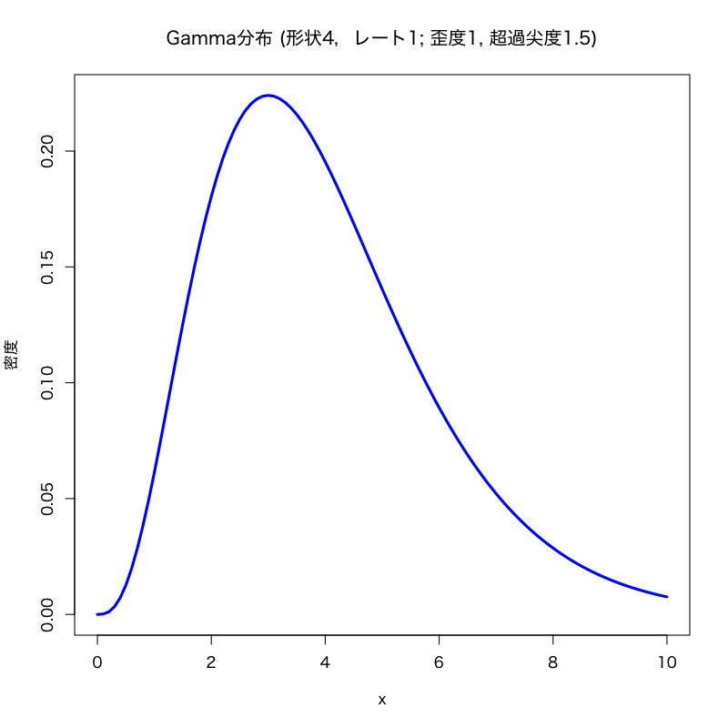

記述統計量
第9講 - 基礎的な記述統計量とデータの集約
(Press ? for help, n and p for next and previous slide)
講義概要
- 基本的な記述統計量
- “モーメント”に基づく記述統計量
- 歪度と尖度
- 相関と共分散
- “順序”に基づく統計量
- “頻度”に基づく統計量
基礎的な記述統計量
記述統計量とは
- 記述統計量 : (または要約統計量・基本統計量)
- データを簡潔に要約して表すための統計値
- その集団全体の特徴を表す重要な指標
- ヒストグラム・密度関数・箱ひげ図などのグラフと併用
- 比較的良く用いられる統計量を以下の観点で分類
- モーメント
- 順序
- 頻度
記述統計量の推定
- 記述統計量は背後の確率分布(集団全体)で決まる量
- 一般に確率分布は未知
- 手に入るのは(少数の)サンプル(観測データ)
(観測データを \(X_1,X_2,\dots,X_n\) で表す) - 推定 = 観測データから知りたい量を計算する方法
- 真の値と観測データによる推定値には差 (誤差) がある
独立同分布性
- 統計解析における重要な仮定とその帰結
- 確率変数 \(X_{1},X_{2},\dotsc,X_{n}\) が 同分布
共通の平均 \(\mu\) および分散 \(\sigma^2\) を考えることができる
(適切な次数のモーメントの存在を仮定) - 確率変数 \(X_{1},X_{2},\dotsc,X_{n}\) が 独立同分布
標本平均はサンプル数 \(n\to\infty\) のとき確率1で真の平均に収束 (大数の強法則)
- 確率変数 \(X_{1},X_{2},\dotsc,X_{n}\) が 同分布
- データは 偏っていない ことを仮定している
推定量の一致性
- サンプル数が大きい場合に “合理的な” 推定量となる根拠の1つ
(強)一致性 (consistency)
推定量がサンプル数 \(n\to\infty\) のとき確率1で真の値に収束する性質
\begin{equation} P\left(|\hat\theta-\theta|<\varepsilon\right) \to1\quad (\forall\varepsilon,\; n\to\infty) \end{equation}- (強)一致推定量 : 一致性をもつ推定量
推定量の不偏性
- サンプル数が小さい場合の推定量の “良さ” に関する性質の1つ
不偏性 (unbiasedness)
推定量 \(\hat{\theta}\) が不偏であるとは, \(\hat{\theta}\) の平均が真の値 \(\theta\) となる性質
\begin{equation} \mathbb{E}[\hat{\theta}]=\theta \end{equation}- 不偏推定量 : 不偏性をもつ推定量
“モーメント”に基づく記述統計量
平均
平均 (mean)
\begin{equation} \mu=\mathbb{E}[X] \end{equation}- データの代表値を表す記述統計量
標本平均 (sample mean)
\begin{equation} \bar{X} =\frac{1}{n}\sum_{i=1}^{n}X_{i} =\frac{X_{1}+\dotsb+X_{n}}{n} % =\frac{X_1+X_2+\cdots+X_n}{n} \end{equation}
分散・標準偏差
分散 (variance)
\begin{equation} \mathrm{Var}(X)=\sigma^{2}=\mathbb{E}[(X-\mu)^{2}] \end{equation}- データのばらつきを表す記述統計量
標本分散 (sample variance)
\begin{equation} S^{2} =\frac{1}{n}\sum_{i=1}^n(X_{i}-\bar{X})^{2} =\frac{(X_{1}-\bar{X})^{2}+\dotsb+(X_{n}-\bar{X})^{2}}{n} % =\frac{(X_1-\bar{X})^2+(X_2-\bar{X})^2+\cdots+(X_n-\bar{X})^2}{n} \end{equation}
標本平均・分散の不偏性
標本平均は \(\mu\) の 不偏推定量である
\begin{equation} \mathbb{E}[\bar{X}]=\mu \end{equation}標本分散は \(\sigma^2\) の 不偏推定量ではない
\begin{equation} \mathbb{E}[S^2]=\frac{n-1}{n}\sigma^2 \end{equation}- 標本分散は平均的には真の分散を 過小推定 する
不偏分散
- 不偏性を担保した分散の推定量
バイアス補正 : 標本分散に \(n/(n-1)\) を乗じたもの
\begin{equation} s^2=\frac{n}{n-1}S^2=\frac{1}{n-1}\sum_{i=1}^n(X_i-\bar{X})^2 \end{equation}- \(\sigma^2\) の 不偏推定量 となる
標本標準偏差
- 標本標準偏差 (sample standard deviation) :
通常は不偏分散の平方根 \(s\) を指す - 一般に \(s\) は標準偏差 \(\sigma\) の 不偏推定量ではない
R : 平均・分散・標準偏差の計算
基本的な使い方
mean(x, trim = 0, na.rm = FALSE) # 標本平均 var(x, na.rm = FALSE) # 不偏分散 sd(x, na.rm = FALSE) # 標本標準偏差 #' x: ベクトル，データフレームなど #' na.rm: 欠損値を取り除くか否か #' 計算方法については help("mean"), help("var"), help("sd") を参照
標準化
- 多次元データの分析のために単位や基準を揃える
データ \(X_{1},X_{2},\dotsc,X_{n}\) の 標準化
\begin{equation} Z_{i}=\frac{X_i-\bar{X}}{s}\quad(i=1,2,\dotsc,n) \end{equation}- \(s\) の代わりに \(S\) で割って定義する文献もある
- 定義から \(Z_{1},Z_{2},\dotsc,Z_{n}\) の 標本平均は0, 不偏分散は1 に 規格化 される
- \(Z_{i}\) : 標準得点 あるいは Zスコア
偏差値
- 別の基準での標準化
- 教育学や心理学では, 平均50, 標準偏差10が好まれる
標本平均50, 標準偏差10に線形変換
\begin{equation} T_{i}=10Z_{i}+50\quad(i=1,\dotsc,n) \end{equation}- \(T_{i}\) : 偏差値得点 あるいは Tスコア
R : 標準化の計算
基本的な使い方
scale(x, center = TRUE, scale = TRUE) # 標準化 #' x: ベクトル，データフレームなど．データフレームの場合は列ごとに標準化 #' center: 中心化(平均0)する (TRUE) か否 (FALSE) か #' scale: 正規化(分散1)する (TRUE) か否 (FALSE) か 10 * scale(x) + 50 # 偏差値得点への変換
実習
練習問題
東京の気候データ (
tokyo_weather.csv) の中の気温 (
temp) ， 日射量 (solar) ， 風速 (wind)の項目について以下の問に答えよ．
- 全てのデータを用いて各項目の平均・分散・標準偏差を求めよ．(データ数365)
- 毎月5日のデータのみを用いて各項目の平均・分散・標準偏差を求めよ．(データ数12)
- 5の付く日(各月の5,15,25)のデータを用いて各項目の平均・分散・標準偏差を求めよ．(データ数36)
- ランダムに選んだ36日分のデータで各項目の平均・分散・標準偏差を求めたとき， 推定量のばらつきを確認せよ．
歪度と尖度
歪度と尖度
- 正規分布からのずれを調べるための統計量
- 正規分布の特徴
- 確率分布のうち最も基本的なもの (中心極限定理)
- 平均と分散を決めると完全に決定される
- 正規分布に従うデータでは標本平均と標本分散(不偏分散)を考えれば十分
- 現実には正規分布では捉えきれない特徴をもつデータも多い
歪度
- 分布の非対称性を表す統計量
歪度 (skewness)
平均 \(\mu\) , 分散 \(\sigma^2\) で 3次モーメントをもつ確率変数 \(X\)
\begin{equation} \mathrm{skewness}=\frac{\mathbb{E}[(X-\mu)^3]}{\sigma^3} \end{equation}- 左右に対称的な分布の歪度は0 (正規分布の歪度は0)
- 歪度が正の場合 : 分布の右の裾の方が重い
- 歪度が負の場合 : 分布の左の裾の方が重い
- 正の歪度をもつ分布の例
- ガンマ分布 \(\Gamma(\nu,\alpha)\) の歪度は \(2/\sqrt{\nu}\)
尖度
- 平均の周囲の分布の尖り具合を表す統計量
尖度 (kurtosis)
4次のモーメントをもつ確率変数 \(X\)
\begin{equation} \mathrm{kurtosis}=\frac{\mathbb{E}[(X-\mu)^4]}{\sigma^4} \end{equation}超過尖度 (excess kurtosis) :
\begin{equation} % \mathrm{excess\ kurtosis}=\frac{\mathbb{E}[(X-\mu)^4]}{\sigma^4}-3 \mathrm{excess\ kurtosis} = \mathrm{kurtosis}-3 \end{equation}- 正規分布との比較のため正規分布の尖度3を引いた量
- こちらを単に尖度と呼ぶ文献もあるので注意
超過尖度
- 正規分布と比較して
- 超過尖度が正の場合 : 平均の周囲の分布の形状が尖っている
超過尖度が負の場合 : 分布の形状は丸みを帯びている
正の場合，正規分布に比べて平均まわりの密度が 分布の裾の方にまわっていることが多いため, 正規分布より裾が重いと解釈されることが多い
- 正の超過尖度をもつ分布の例
- 自由度 \(\nu>4\) をもつ \(t\)-分布 \(t(\nu)\) の超過尖度は \(6/(\nu-4)\)
(\(\nu\leq 4\) のときは \(t(\nu)\) は4次モーメントをもたない) - ガンマ分布 \(\Gamma(\nu,\alpha)\) の超過尖度は \(6/\nu\)
- 自由度 \(\nu>4\) をもつ \(t\)-分布 \(t(\nu)\) の超過尖度は \(6/(\nu-4)\)


標本歪度と標本尖度
- 観測データ \(X_{1},X_{2},\dotsc,X_{n}\) による推定
標本歪度 (sample skewness)
\begin{equation} \mathrm{skewness}=\frac{\frac{1}{n}\sum_{i=1}^n(X_i-\bar{X})^3}{s^3} \end{equation}標本尖度 (sample kurtosis)
\begin{equation} \mathrm{kurtosis}=\frac{\frac{1}{n}\sum_{i=1}^n(X_i-\bar{X})^4}{s^4} \end{equation}- 分子の計算は \(1/n\) としているが，別の場合もあるので注意
R : 歪度と尖度の計算
歪度・尖度を計算する関数はRの標準機能にはないので
package::e1071を利用 (自作してもよい)標本歪度・標本尖度の値は標本平均・分散に比べて ばらつきが大きい ので， サンプル数が少ない場合の計算結果の解釈には注意が必要
基本的な使い方
library("e1071") # package::e1071 の読み込み．必要なら install する skewness(x, na.rm = FALSE, type = 3) # 標本歪度 kurtosis(x, na.rm = FALSE, type = 3) # 標本超過尖度 (尖度ではない) #' x: ベクトル，データフレームなど #' na.rm: 欠損値を取り除くか否か #' type: 計算法の指定(通常は既定値でよい)
実習
練習問題
東京の気候データ (
tokyo_weather.csv) の中の気温 (
temp) ， 日射量 (solar) ， 風速 (wind)の項目について以下の問に答えよ．
- 全てのデータを用いて各項目の歪度と超過尖度を求めよ．(データ数365)
- 5のつく日のデータのみを用いて各項目の歪度と超過尖度を求めよ．(データ数36)
- それぞれの値から正規分布から逸脱していると思われる項目はいずれか考察せよ．
- 各データのヒストグラムを描き，データから計算される平均と分散を持つ正規分布と比較せよ．
相関と共分散
共分散
- 複数のデータ間の関係を知るための記述統計量
共分散 (covariance)
\begin{equation} \mathrm{Cov}(X,Y)=\mathbb{E}[(X-\mathbb{E}[X])(Y-\mathbb{E}[Y])] \end{equation}- 直感的には2種類のデータ間の比例関係の大きさ
標本共分散
- 観測データ \(X_1,X_2,\dots,X_n\) および \(Y_1,Y_2,\dots,Y_n\) による推定
標本共分散 (sample covariance)
\begin{equation} \mathrm{Cov}(X,Y)=\frac{\sum_{i=1}^n(X_i-\bar{X})(Y_i-\bar{Y})}{n-1} \end{equation}- ただし\(\bar{X},\bar{Y}\)は \(X_1,X_2,\dotsc,X_N\) および \(Y_1,Y_2,\dotsc,Y_N\) の平均
相関
- 複数のデータ間の正規化した記述統計量
相関 (correlation)
\begin{equation} \rho=\frac{\mathrm{Cov}(X,Y)}{\sqrt{\mathrm{Var}(X)\mathrm{Var}(Y)}} \end{equation}- 相関の値は \(-1\) 以上 \(1\) 以下
- \(1\) に近いほど正の比例関係が強い
- \(-1\) に近いほど負の比例関係が強い
標本相関
- 観測データ \(X_1,X_2,\dots,X_n\) および \(Y_1,Y_2,\dots,Y_n\) による推定
標本相関 (sample correlation)
\begin{equation} \rho=\frac{\sum_{i=1}^n(X_i-\bar{X})(Y_i-\bar{Y})} {\sqrt{\sum_{i=1}^n(X_i-\bar{X})^2}\sqrt{\sum_{i=1}^n(Y_i-\bar{Y})^2}} \end{equation}- ただし\(\bar{X},\bar{Y}\)は \(X_1,X_2,\dotsc,X_N\) および \(Y_1,Y_2,\dotsc,Y_N\) の平均
R : 相関と共分散の計算
基本的な使い方
cov(x, y = NULL, use = "everything", method = c("pearson", "kendall", "spearman")) # 共分散 cor(x, y = NULL, use = "everything", method = c("pearson", "kendall", "spearman")) # 相関 #' x,y: ベクトル，データフレームなど (データフレームの時は列間の関係を計算) #' use: 欠損値などの扱いに関する指定 #' method: 計算法の指定(通常は既定値 pearson でよい)
実習
練習問題
東京の気候データ (
tokyo_weather.csv) の中の気温 (
temp), 降水量 (rain), 日射量 (solar), 風速 (wind), 気圧 (press), 湿度 (humid)(いずれも数値データ) の項目について以下の問に答えよ．
- それぞれの項目間の共分散，および相関を求めよ．
- 相関の高い項目の組(絶対値が大きい)，および相関の低い項目の組(0に近い)を求めよ．
- その項目同士の散布図を描け．
“順序”に基づく統計量
中央値
データの順序にもとづく記述統計量
\begin{equation} X_{(1)}\leq X_{(2)}\leq\cdots\leq X_{(n)} \end{equation}中央値 もしくは メディアン (median)
データを昇順に並べ替えたとき中央にくる値
- \(n\) が奇数の場合 : \(X_{((n+1)/2)}\)
- \(n\) が偶数の場合 : \((X_{(n/2)}+X_{(n/2+1)})/2\)
- 中央値は平均と同様にデータを代表する値
- データ中の 外れ値 (異常な値)の影響を受けにくい
分位点
- メディアンの一般化
\(100\alpha\) % 分位点 (percentile/quantile)
\(\alpha\in[0,1]\) に対して, その点以下のデータの個数が全体の約 \(100\alpha\) % になるような点
- 第1四分位点 : 25%分位点
- 第2四分位点 : 50%分位点 (中央値と等価)
- 第3四分位点 : 75%分位点
中央値・分位点の計算
基本的な使い方
median(x, na.rm = FALSE) # 中央値 quantile(x, probs = seq(0, 1, 0.25), na.rm = FALSE, names = TRUE, type = 7) # 分位点 summary(x) # 最大，最小，四分位点，平均を計算する #' x: ベクトル #' na.rm: 欠損値を取り除くか否か #' probs: 計算する分位点の値 #' names: 出力に関する指定，多数の分位点を計算する場合は FALSE とした方がよい #' type: 計算法の指定(help(quantile) を参照)
連続分布の分位点
- 分位点は推定や検定において重要な役割を果たす
連続分布の \(100\alpha\) % 分位点
\(0<\alpha<1\) に対して，その分布に従う確率変数を \(X\) としたとき， 不等式
\begin{equation} P(X\leq x)\geq\alpha \end{equation}を満たす実数 \(x\) のうち最小のもの
そのような実数 \(q_\alpha\) は常に存在し, 以下が成り立つ．
\begin{equation} P(X\leq q_\alpha)=\alpha \end{equation}
分位点の性質
\(X_1,X_2,\dots,X_n\) が独立同分布な確率変数の列のとき, \(X_1,X_2,\dots,X_n\) の \(100\alpha\) %分位点は， \(n\to\infty\) のとき \(X_1,X_2,\dots,X_n\) の従う 分布の \(100\alpha\) %分位点の 一致推定量 となる．
分布の分位点の計算
基本的な使い方
#' 以下は正規分布での計算例 qnorm(p, mean = 0, sd = 1, lower.tail = TRUE, log.p = FALSE) #' p: 分位点 (100p%) #' mean, sd: 正規分布の特性を決めるoption #' lower.tail: TRUE なら P(X<x) を計算．FALSE なら逆 #' log.p: 確率を対数とするか否か (値が小さい場合に利用) #' #' xxx分布の場合は以下の形式 qxxx(p, "分布の特性を決める option の指定")
ばらつきの指標
- 分位点を利用したデータのばらつきの指標
範囲 (range)
最大値と最小値の差 (外れ値の影響を大きく受ける)
四分位範囲 (interquantile range)
第3四分位点と第1四分位点の差
中央絶対偏差 (median absolute deviation)
\(X_1,X_2,\dots,X_n\) の中央値を \(m\) としたとき, \(|X_1-m|,|X_2-m|,\dots,|X_n-m|\) の中央値
ばらつきの指標の計算
基本的な使い方
#' 範囲 range(..., na.rm = FALSE, finite = FALSE) #' 四分位範囲 IQR(x, na.rm = FALSE, type = 7) #' 中央絶対偏差 mad(x, center = median(x), constant = 1.4826, na.rm = FALSE, low = FALSE, high = FALSE) #' ...: データ (複数渡すことができる) #' x: 数値ベクトル #' na.rm: 欠損(NA)の削除 (既定値は削除しない) #' constant: madの補正値 (既定値は正規分布を仮定して標準偏差に換算)
“頻度”に基づく統計量
頻度に基づく統計量
最頻値 もしくは モード (mode)
データの中で最も頻度が高く現れる値
- データが有限個の値を取る場合に特に有効
- データが連続で無限に多くの値を取ることができる場合には
注意が必要
- 連続なデータの場合でも有限個の観測データに対してモードは定義できる
- ただし，偶々観測値として現れた値なのでその意味はよく考えなくてはならない
- 必要に応じて, 例えば区分的に集計するなどの工夫をすることもある
実習
練習問題
東京の気候データ (
tokyo_weather.csv) の中の気温 (
temp; 数値データ)と最多風向 (wdir; ラベルデータ)を用いて 以下の問に答えよ．
- 全てのデータを用いて気温の四分位点を求めよ．(データ数365)
- 5の付く日(各月の5,15,25)の気温の四分位点を求めよ．(データ数36)
- ランダムに選んだ36日分のデータで気温の四分位点がどのくらいばらつくか確認せよ．
- 風向の最頻値を求めよ．
次回の予定
- 点推定
- 不偏推定量
- Cramér-Raoの不等式
- 最尤推定量
- 区間推定
- 信頼区間
- 正規母集団の区間推定
- 漸近正規性にもとづく区間推定